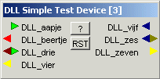

Semptember 2002
JALss, Building simple-DLL-device
For building a simple-DLL-device, you only have to write the following code sections
|
Step 2 can be omitted, if for instance the device is a generator. Step 3 should always be present, because that's the only way you can communicate to the "outside-world" or user. If necessary, a reset procedure can be implemented. Below is the complete code for a simple-DLL-device, written in Delphi. In bold the lines you should change to get the desirable functionality. |
 |
Before writing a device, it's advised to study the device-types in device_types.pas.
If you want to write a DLL in other language, you should also translate the type-definitions (device_types.pas) and the message definitions (msg_glob.pas). I'll be glad to host those translations on my download page.
After writing the DLL, you've to "register" the device.
unit DLL_dev_test_simple_DLL;
(*******************************************************************************
This is a demo of a simple device in a DLL for JALss.
****************************************************************************)
interface
uses
Windows, Messages, SysUtils, Classes, Graphics, Controls, Dialogs,
StdCtrls, Buttons, janShape
,ComCtrls
,shellapi
,msg_glob //message number constants
,device_types //general pin / devices types
;
(*******************************************************************************
DLL entries
LEAVE THIS UNCHANGED (names are case-sensitive !!!)
*******************************************************************************)
procedure DLL_DEV_CREATE(
instance :integer;
var DLL_parameters :t_DLL_parameters); export; stdcall;
procedure DLL_DEV_DESTROY(instance:integer);export; stdcall;
procedure DLL_DEV_DO_RESET(instance :integer) export; stdcall;
procedure DLL_DEV_EXECUTE1(
instance :integer;
var DLL_exe_pars :t_DLL_exe_pars); export; stdcall;
procedure DLL_DEV_EXECUTE2(
instance :integer;
var DLL_exe_pars :t_DLL_exe_pars); export; stdcall;
(*******************************************************************************
*******************************************************************************)
const
nio_pins =7; //number of IO-pins
type
Ttest_dev = class
private
public
(*******************************************************************************
Standard variables to store important information
LEAVE THIS UNCHANGED
*******************************************************************************)
help_path :string;
dev_nr :integer;
typ_nr :integer;
//although not all IO-pins are INPUTS,
//it's still advisible to declare an entry for each IO-pin
input_value :array [0..nio_pins-1] of integer;
end;
implementation
(*******************************************************************************
local vars
LEAVE THIS UNCHANGED
*******************************************************************************)
var
dev_ar :array [1..max_DLL_instance_count] of Ttest_dev;
(*******************************************************************************
*******************************************************************************)
procedure DLL_DEV_CREATE(
instance :integer;
var DLL_parameters :t_DLL_parameters);
(*******************************************************************************
*******************************************************************************)
begin
dev_ar[instance]:=Ttest_dev.create;
with dev_ar[instance] do
begin
//retrieve and store parameters device constants into the DLL_parameters;
with DLL_parameters do
begin
//store important information to communicate with the mainprogram
dev_nr:=DLL_dev_nr;
typ_nr:=DLL_typ_nr;
DLL_help_path:='JALss_connections.htm';
//define all IO pins
DLL_nio_pin:=nio_pins;
DLL_IO_kind[0]:=DigIn;
DLL_IO_name[0]:='DLL_aapje';
DLL_IO_kind[1]:=DigOut;
DLL_IO_name[1]:='DLL_beertje';
DLL_IO_kind[2]:=DigIO;
DLL_IO_name[2]:='DLL_drie';
DLL_IO_kind[3]:=AnalogOut;
DLL_IO_name[3]:='DLL_vier';
DLL_IO_kind[4]:=AnalogIn;
DLL_IO_name[4]:='DLL_vijf';
DLL_IO_kind[5]:=AnalogIO;
DLL_IO_name[5]:='DLL_zes';
DLL_IO_kind[6]:=AnalogOut;
DLL_IO_name[6]:='DLL_zeven';
//fullname of the device
DLL_name:=pchar('DLL Simple Test Device');
//Active frequency of this device,
//the main system clock is derived from the highest active frequency
//if this device doesn't have a clock, make it zero
DLL_frequency:=0;
//Fast devices are called every clockcycle,
//Slow devices are called less often ....
//Static devices are only called once
DLL_fast_slow:=fast;
end;
//call the reset function
DLL_DEV_DO_RESET(instance);
end;
end;
procedure DLL_DEV_DESTROY(instance:integer);
(*******************************************************************************
Destroys the selected instance of the device and frees the memory
*******************************************************************************)
begin
freeandnil(dev_ar[instance]);
end;
procedure DLL_DEV_DO_RESET(instance :integer);
(*******************************************************************************
Resets the device
*******************************************************************************)
begin
//nothing to do here
end;
procedure DLL_DEV_EXECUTE1(
instance :integer;
var DLL_exe_pars :t_DLL_exe_pars);
(*******************************************************************************
In the first execution phase, all inputs should be read and stored in internal variables.
Alternatively you can calculate the outputs and store the output results instead
of the input signals.
(Calculations can either be done in execution phase 1 or 2.)
*******************************************************************************)
begin
with dev_ar[instance] do
begin
input_value[0]:=DLL_exe_pars.DLL_input_value[0];
end;
end;
procedure DLL_DEV_EXECUTE2(
instance :integer;
var DLL_exe_pars :t_DLL_exe_pars);
(*******************************************************************************
In the second execution phase, all outputs should be set.
*******************************************************************************)
begin
with dev_ar[instance] do
begin
if input_value[0] in [digio_high,digio_pullup,digio_tristate] then
DLL_exe_pars.DLL_output_value[1]:=digio_low
else
DLL_exe_pars.DLL_output_value[1]:=digio_high;
end;
end;
end.